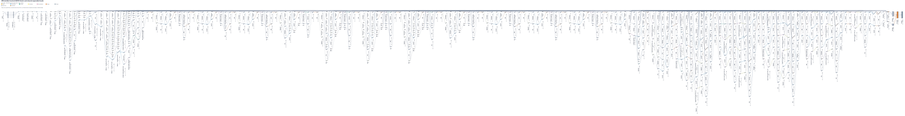
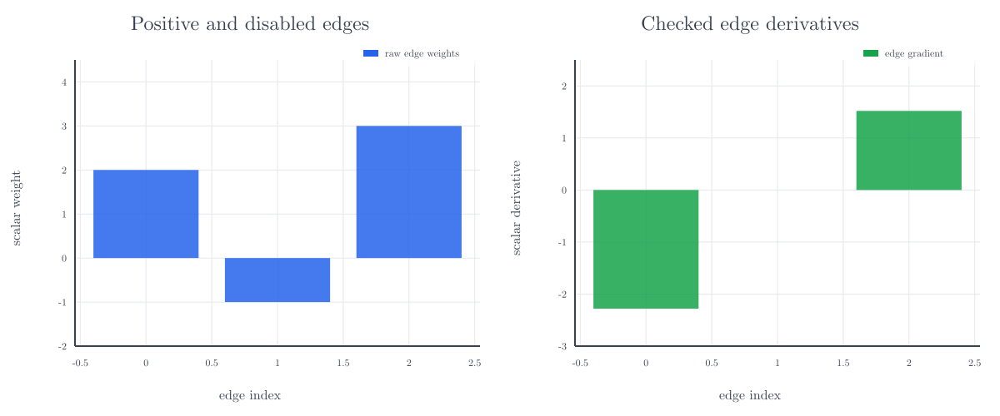
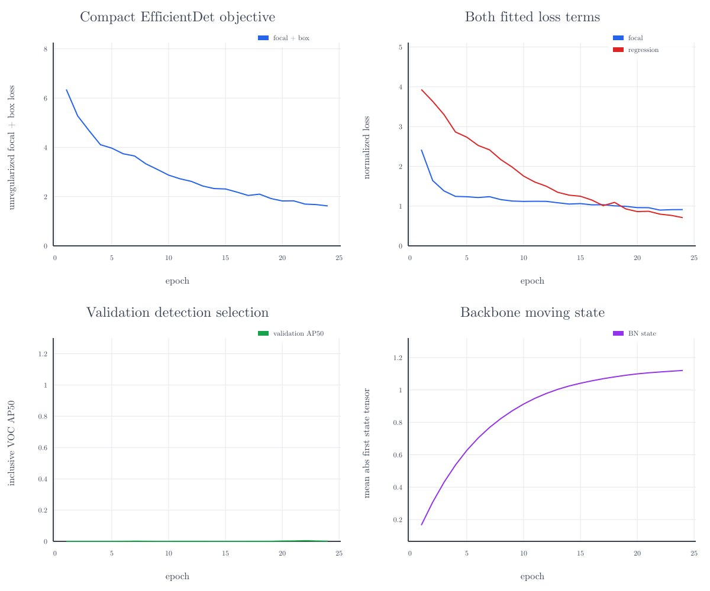
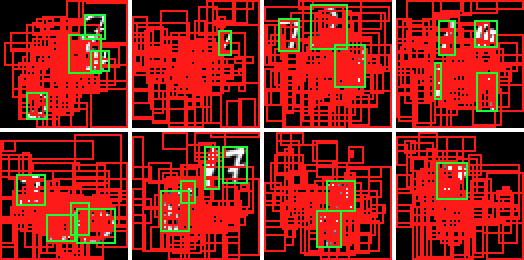

EfficientDet learned BiFPN fusion and shared separable heads
Abstract
Verify fast-normalized fusion and its gradients, odd-grid bidirectional pyramids and full D0 graph counts, then visibly fit every parameter of the compact source EfficientDet with paired BN-state checkpoints and actual digit scenes.
Source example: examples/cpp/source/nn/1_convolutional_neural_networks/1.6_object_detection/efficientdet.cpp.
The method
EfficientDet combines feature-only EfficientNet, repeated weighted bidirectional feature pyramids and shared separable classification/regression towers. Learned fusion-edge scalars enter tensor optimization alongside convolution and normalization parameters.
The concept diagram below is drawn by dm::graphics::Diagram. Its editable C++
source is the complete block below; regeneration uses the same datamunge toolchain
as the numerical examples. Exports consume the saved local SVG.
#include <dm/dm.hpp>
int main() {
std::filesystem::create_directories("build");
dm::graphics::Diagram diagram;
diagram.node("n0", {0.0, 0}, "EfficientNet endpoints\nRepeated weighted BiFPN");
diagram.node("n1", {5.2, 0}, "Shared separable heads\nPer-level BN state");
diagram.node("n2", {10.4, 0}, "Explicit Adam fitting\nPaired checkpoints");
diagram.edge("n0", "n1").edge("n1", "n2");
diagram.save_svg("build/efficientdet_concept.svg");
}
Executed tensor architecture
All displayed prediction branches are joined only to keep them reachable in one diagram; the flattened display output is not postprocessed detection or pose inference.
This figure executes the inference configuration shown in the code, using a zero-valued shape probe without fitting or loading a checkpoint. Named stage boundaries group whole subgraphs where available; other nodes retain functional-layer detail. Exact batch-inclusive shapes and reachable parameter totals come from the trace. Shared linear scales map spatial dimensions and channel counts to blocks; the one-pixel visibility floor is disclosed in the legend. Labels use compact monospace text, rotate counterclockwise and sit beside their own glyphs. Arrows flow left to right; wide diagrams scroll at native size on the website.
#include <dm/dm.hpp>
int main() {
namespace n = dm::nn;
namespace m = n::models;
n::set_num_threads(2);
std::filesystem::create_directories("build");
m::DetectionSceneConfig cfg;
m::EfficientDetConfig model;
n::ParameterStore p(17), state(17);
cfg.scenes = 80;
cfg.seed = 11;
model.classes = 10;
model.image_size = 64;
model.width = 32;
model.repeats = 2;
model.head_repeats = 2;
model.backbone_multiplier = .25;
model.grayscale = true;
n::Module architecture_model(
[&](const n::Tensor& image) {
const auto out = m::EfficientDet(p, state, image, model, false);
return n::concat({out.logits.reshape({1, -1}), out.deltas.reshape({1, -1})}, 1);
},
"EfficientDet learned BiFPN fusion and shared separable heads");
n::ModelPlotOptions options;
options.style = n::ModelPlotStyle::Flow;
options.detail = n::ModelPlotDetail::Blocks;
options.labels = {.type = n::ModelPlotLabel::NameAndShape, .size = 12, .wrap = 24};
options.spacing = {.layer = 24, .lane = 12, .label = 8, .margin = 20};
options.sizing.spatial_size = 96;
options.sizing.channel_size = 42;
options.sizing.minimum_extent = 1;
options.opacity = .8;
const auto diagram = architecture_model.plot(n::zeros({1, 64, 64, 1}), options);
diagram.save_svg("build/efficientdet_architecture.svg");
std::print(
"{} displayed nodes; {} reachable learned values.\n",
diagram.nodes().size(),
diagram.parameter_count());
}636 displayed nodes; 342038 reachable learned values.

Fast-normalized fusion with learned edges
BiFPN fuses each node's incoming features with
sum(relu(w_i)*x_i)/(sum(relu(w_i))+.0001). Negative edges are disabled.
An all-zero set produces exact zero values and derivatives, because this
library defines ReLU's zero derivative as zero. Epsilon means normalized
weights sum slightly below one. Weights are learned scalar parameters and
appear in the visible whole-model Adam loop below.
The independent fixture checks every output, input gradient and scalar-weight gradient, including a disabled negative edge. It is a numerical check, with no optimizer invocation needed to verify the formula.
#include <dm/dm.hpp>
int main() {
namespace n = dm::nn;
const auto type = n::DType::Float64;
std::vector<n::Tensor> x, w, leaves;
const double values[3][2] = {{1, -2}, {3, 5}, {7, 11}}, initial[] = {2, -1, 3};
for (int i = 0; i < 3; ++i) {
x.push_back(
n::from_vector(std::vector<double>{values[i][0], values[i][1]}).requires_grad_());
w.push_back(n::full({}, initial[i], type).requires_grad_());
}
leaves = x;
leaves.insert(leaves.end(), w.begin(), w.end());
const auto y = n::models::FastFeatureFusion(x, w);
const auto g = n::grad(n::sum(y), leaves);
const double den = 5.0001;
double error = 0;
for (int k = 0; k < 2; ++k)
error = std::max(error, std::abs(y.at({k}) - (2 * values[0][k] + 3 * values[2][k]) / den));
std::vector<double> expected_weight_grad;
for (int i = 0; i < 3; ++i) {
double expected = 0;
for (int k = 0; k < 2; ++k) {
error = std::max(error, std::abs(g[i].at({k}) - std::max(0., initial[i]) / den));
expected += (values[i][k] * den - 2 * values[0][k] - 3 * values[2][k]) / (den * den);
}
expected_weight_grad.push_back(initial[i] > 0 ? expected : 0);
error = std::max(error, std::abs(g[i + 3].item() - expected_weight_grad.back()));
}
if (error > 1e-12)
return 1;
auto a = dm::graphics::RPlot::create();
a.bars({0, 1, 2}, std::vector<double>{2, -1, 3}, "raw edge weights", {37, 99, 235})
.title("Positive and disabled edges")
.x_label("edge index")
.y_label("scalar weight")
.y_limits(-2, 4.5);
auto b = dm::graphics::RPlot::create();
b.bars({0, 1, 2}, expected_weight_grad, "edge gradient", {22, 163, 74})
.title("Checked edge derivatives")
.x_label("edge index")
.y_label("scalar derivative")
.y_limits(-3, 2.5);
std::filesystem::create_directories("build");
dm::graphics::RLayout::create(1, 2).add(a).add(b).size(1200, 500).fit_panels().save_svg(
"build/efficientdet_fusion.svg");
for (auto &v : w)
v = n::zeros({}, type).requires_grad_();
leaves = x;
leaves.insert(leaves.end(), w.begin(), w.end());
const auto zero = n::models::FastFeatureFusion(x, w);
for (const auto &v : n::grad(n::sum(zero), leaves))
if (n::count_nonzero(v).item() != 0)
return 1;
std::print("Every fusion value/input/weight derivative passes independent oracle; max "
"error{:.12f}. Outputs[{:.9f},{:.9f}]. All-zero edge weights have exact zero "
"outputs/gradients.\n",
error, y.at({0}), y.at({1}));
}Every fusion value/input/weight derivative passes independent oracle; max error0.000000000000. Outputs[4.599908002,5.799884002]. All-zero edge weights have exact zero outputs/gradients.

Eight-node bidirectional pyramid and full D0 graph
Top-down P6/P5/P4/P3 nodes precede bottom-up P4/P5/P6/P7, for eight nodes and nineteen learned incoming edges. Middle bottom-up nodes also retain their original input. Mismatched-width input edges get independent1x1+BN projections. Nearest upsampling and3x3 SAME max-pooling preserve odd grid sizes. Each node applies fusion, Swish, depthwise3x3/pointwise1x1 and BN.
The D0–D7 table below is architecture metadata, not measured model quality. The initialized full D0 probe executes all493 learned tensor gradients using 128-pixel input: 3,874,217 learned/47,136 state scalars. Its default512-pixel geometry has49,104 anchors. It does not fit a full-resolution COCO benchmark.
#include <dm/dm.hpp>
int main() {
namespace n = dm::nn;
namespace m = n::models;
n::set_num_threads(2);
{
n::ParameterStore p(17), state(17);
std::vector<n::Tensor> x;
for (int side : {17, 9, 5, 3, 2})
x.push_back(n::ones({2, side, side, 4}));
const auto y = m::BiFpnCell(p, state, "cell", x, 4);
if (p.count() != 531 || state.count() != 64)
return 1;
for (int i = 0; i < 5; ++i)
if (y[i].shape() != x[i].shape())
return 1;
std::print("Odd17/9/5/3/2 grids retained; eight nodes/nineteen edges: {} learned/{} state "
"scalars.\n",
p.count(), state.count());
}
std::print("| variant | backbone | width | cells | head layers | side "
"|\n|---|---:|---:|---:|---:|---:|\n");
for (int i = 0; i < 8; ++i) {
const auto c = m::EfficientDetScaling(i);
std::print("| D{} | B{} | {} | {} | {} | {} |\n", i, c.backbone, c.width, c.repeats,
c.head_repeats, c.resolution);
}
n::ParameterStore p(17), state(17);
m::EfficientDetConfig c;
c.image_size = 128;
c.update_stats = false;
const auto net = m::EfficientDet(
p, state, n::sin(.13 * n::arange(0, 128 * 128 * 3)).reshape({1, 128, 128, 3}), c, true);
const auto grads =
n::grad(n::mean(n::square(net.logits)) + n::mean(n::square(net.deltas)), p.parameters());
if (p.count() != 3874217 || state.count() != 47136 || grads.size() != 493 ||
net.anchors != 3069)
return 1;
for (const auto &g : grads)
if (!g.defined() || !std::isfinite(n::sum(n::square(g)).item()))
return 1;
std::print("Initialized full D0/80: {} learned/{} state scalars, all{} finite defined "
"learned gradients; {} anchors at128, {} at512.\n",
p.count(), state.count(), grads.size(), net.anchors,
m::RetinaAnchors({64, 32, 16, 8, 4}).shape()[0]);
}Odd17/9/5/3/2 grids retained; eight nodes/nineteen edges: 531 learned/64 state scalars.
| variant | backbone | width | cells | head layers | side |
|---|---|---|---|---|---|
| D0 | B0 | 64 | 3 | 3 | 512 |
| D1 | B1 | 88 | 4 | 3 | 640 |
| D2 | B2 | 112 | 5 | 3 | 768 |
| D3 | B3 | 160 | 6 | 4 | 896 |
| D4 | B4 | 224 | 7 | 4 | 1024 |
| D5 | B5 | 288 | 7 | 4 | 1280 |
| D6 | B6 | 384 | 8 | 5 | 1280 |
| D7 | B6 | 384 | 8 | 5 | 1536 |
Initialized full D0/80: 3874217 learned/47136 state scalars, all493 finite defined learned gradients; 3069 anchors at128, 49104 at512.
Actual compact scenes and explicit whole-model Adam
The backbone stops before its classifier and emits stride8/16/32 endpoints. Projected/downsampled C5 creates P6; pooled P6 creates P7. Head separable kernels share across all five levels, while their BN affine parameters and statistics have per-level prefixes. BN uses momentum .99/epsilon .001; backbone drop connect is zero in this source port.
The compact source model uses D0 EfficientNet widths multiplied by .25, 32-channel pyramids, two independent BiFPN cells and two shared separable head layers, with10 foreground classes. It has342,038 learned and13,568 BN-state scalars. This report uses64-pixel scenes/base-eight anchors, with the same 64 fit/16 validation/eight test real MNIST-derived scene split as the other reports. Full D0 architecture validation and this compact fit are distinct.
#include <dm/dm.hpp>
int main() {
namespace n = dm::nn;
n::set_num_threads(2);
std::filesystem::path cache;
if (const auto *p = std::getenv("DATAMUNGE_DATA_DIR"))
cache = p;
else if (const auto *p = std::getenv("XDG_CACHE_HOME"))
cache = std::filesystem::path(p) / "datamunge/datasets";
else
cache = std::filesystem::path(std::getenv("HOME")) / ".cache/datamunge/datasets";
dm::datasets::fetch("mnist", (cache / "mnist").string());
const auto train = n::load_mnist((cache / "mnist").string(), "train");
n::models::DetectionSceneConfig cfg;
cfg.scenes = 80;
cfg.seed = 11;
const auto scenes = n::models::MakeTensorDetectionScenes(
n::slice_axis(train.images, 0, 0, 2048), n::slice_axis(train.labels, 0, 0, 2048), cfg);
std::vector<n::Tensor> boxes(scenes.boxes.begin(), scenes.boxes.begin() + 8);
const auto preview = n::models::DrawDetectionBoxes(n::slice_axis(scenes.images, 0, 0, 8),
boxes, {.1, 1., .2});
std::filesystem::create_directories("build");
n::save_image_grid(preview, "build/efficientdet_scenes.png", 4, 0., 1., 4, 1., 2);
std::int64_t objects = 0;
for (const auto &b : scenes.boxes)
objects += b.shape()[0];
std::print("80 generated training/validation scenes; {} accepted digits. Preview: first "
"eight training scenes with tight green boxes.\n",
objects);
}80 generated training/validation scenes; 195 accepted digits. Preview: first eight training scenes with tight green boxes.

The explicit loop warms all leaves before Adam(.001), then runs 24 epochs,
batch four, 384 updates, which keeps the documentation build short. The visible focal plus beta1/9 box Smooth-L1 objective
uses RetinaNet target assignment and normalization, with explicit kernel L2
.00005*sum(kernel²). Fusion scalars, biases and normalization affines are
optimized but excluded from L2. Strict validation AP50 improvement saves both
parameter and BN-state files; restoration is verified before test evaluation.
Source-compatible inference considers all sigmoid classes, top200 per class above .01, unit box coding, clipping, class-wise .5 NMS and100/image. The complete compact gradient test allows the source's analytically zero final P7 BN-beta derivative: downstream batch-statistics normalization cancels a constant shift. A zero derivative there does not imply a disconnected graph.
#include <dm/dm.hpp>
int main() {
namespace n = dm::nn;
namespace m = n::models;
n::set_num_threads(2);
std::filesystem::path cache;
if (const auto *p = std::getenv("DATAMUNGE_DATA_DIR"))
cache = p;
else if (const auto *p = std::getenv("XDG_CACHE_HOME"))
cache = std::filesystem::path(p) / "datamunge/datasets";
else
cache = std::filesystem::path(std::getenv("HOME")) / ".cache/datamunge/datasets";
dm::datasets::fetch("mnist", (cache / "mnist").string());
const auto digits = n::load_mnist((cache / "mnist").string(), "train");
m::DetectionSceneConfig cfg;
cfg.scenes = 80;
cfg.seed = 11;
const auto scenes = m::MakeTensorDetectionScenes(
n::slice_axis(digits.images, 0, 0, 2048), n::slice_axis(digits.labels, 0, 0, 2048), cfg);
m::EfficientDetConfig model;
model.classes = 10;
model.image_size = 64;
model.width = 32;
model.repeats = 2;
model.head_repeats = 2;
model.backbone_multiplier = .25;
model.grayscale = true;
const auto anchors = m::RetinaAnchors({8, 4, 2, 1, 1}, 8.);
std::vector<std::int64_t> val_rows(16);
std::iota(val_rows.begin(), val_rows.end(), 64);
std::vector<int> val_ids(val_rows.begin(), val_rows.end());
n::ParameterStore p(17), state(17);
{
n::NoGradGuard guard;
const auto warm = m::EfficientDet(p, state, n::zeros({1, 64, 64, 1}), model, false);
if (warm.anchors != anchors.shape()[0])
return 1;
}
if (p.count() != 342038 || state.count() != 13568)
return 1;
// Inference borrows this scope's p/anchors; every class and default is handled by tensor kernels.
const auto detect = [&](const m::TensorDetectionScenes &data,
const std::vector<std::int64_t> &rows) {
n::NoGradGuard guard;
const auto net = m::EfficientDet(
p, state, 2. * n::gather(data.images, n::from_vector(rows)) - 1., model, false);
return m::DecodeRetinaDetections(net.probabilities, net.deltas, anchors,
n::from_vector(rows), 64, 64);
};
// Annotation conversion is presentation of existing tensor boxes/IDs, with no box arithmetic.
const auto truth_records = [](const m::TensorDetectionScenes &data,
const std::vector<std::int64_t> &rows) {
std::vector<m::DetectionEvaluationTruth> out;
for (auto row : rows) {
const auto boxes = n::boxes_to_vector(data.boxes[row]);
const auto labels = data.labels[row].to_vector<int>();
for (std::size_t i = 0; i < boxes.size(); ++i)
out.push_back({int(row), labels[i], boxes[i]});
}
return out;
};
const auto validation_truth = truth_records(scenes, val_rows);
n::OptimizerConfig adam_config;
adam_config.kind = n::OptimizerKind::Adam;
n::Optimizer adam(p, .001, adam_config);
n::BatchOrder batches(64, 4, 29);
std::vector<n::Tensor> kernels;
for (const auto &leaf : p.parameters())
if (leaf.dim() >= 2)
kernels.push_back(leaf);
std::filesystem::create_directories("build");
const std::string checkpoint = "build/efficientdet_best.npz";
std::vector<double> epochs, losses, ce_trace, reg_trace, ap_trace, scale_trace;
double best = -1;
int selected = 0, steps = 0;
std::print("| epoch | focal + box loss | CE | regression | val AP50 "
"|\n|---:|---:|---:|---:|---:|\n");
for (int epoch = 1; epoch <= 24; ++epoch) {
batches.begin_epoch();
double total = 0, total_ce = 0, total_reg = 0;
std::size_t seen = 0;
for (auto rows = batches.next(); !rows.empty(); rows = batches.next()) {
const auto net = m::EfficientDet(
p, state, 2. * n::gather(scenes.images, n::from_vector(rows)) - 1., model, true);
const auto targets = m::MakeRetinaTargets(anchors, scenes, rows, 10);
const auto focal = n::sum(n::sum(m::SigmoidFocalLoss(net.logits, targets.classes), {2}) *
targets.weights) /
n::maximum(n::sum(targets.positive), n::ones({}));
const auto objective = m::RetinaLoss(net.logits, net.deltas, targets);
n::Tensor penalty = n::zeros({});
for (const auto &kernel : kernels)
penalty = penalty + n::sum(n::square(kernel));
if (!std::isfinite(objective.item()))
return 1;
total += objective.item() * rows.size();
total_ce += focal.item() * rows.size();
total_reg += (objective - focal).item() * rows.size();
seen += rows.size();
adam.minimize(objective + .00005 * penalty);
++steps;
}
const auto metric =
m::EvaluateDetectionDataset(m::DetectionEvaluationRecords(detect(scenes, val_rows)),
validation_truth, val_ids, false, true);
epochs.push_back(epoch);
losses.push_back(total / double(seen));
ce_trace.push_back(total_ce / double(seen));
reg_trace.push_back(total_reg / double(seen));
ap_trace.push_back(metric.ap50.item());
scale_trace.push_back(n::mean(n::abs(state.at(state.names()[0]))).item());
if (metric.ap50.item() > best) {
best = metric.ap50.item();
selected = epoch;
p.save(checkpoint);
state.save("build/efficientdet_best_state.npz");
}
std::print("| {} | {:.6f} | {:.6f} | {:.6f} | {:.6f} |\n", epoch, losses.back(),
ce_trace.back(), reg_trace.back(), ap_trace.back());
}
p.load(checkpoint);
state.load("build/efficientdet_best_state.npz");
const auto restored =
m::EvaluateDetectionDataset(m::DetectionEvaluationRecords(detect(scenes, val_rows)),
validation_truth, val_ids, false, true);
if (std::abs(restored.ap50.item() - best) > 1e-12)
return 1;
const auto test_digits = n::load_mnist((cache / "mnist").string(), "test");
cfg.scenes = 8;
cfg.seed = 22;
const auto test =
m::MakeTensorDetectionScenes(n::slice_axis(test_digits.images, 0, 0, 512),
n::slice_axis(test_digits.labels, 0, 0, 512), cfg);
std::vector<std::int64_t> test_rows(8);
std::iota(test_rows.begin(), test_rows.end(), 0);
std::vector<int> test_ids(test_rows.begin(), test_rows.end());
const auto output = detect(test, test_rows);
const auto records = m::DetectionEvaluationRecords(output);
const auto truth = truth_records(test, test_rows);
const auto voc = m::EvaluateDetectionDataset(records, truth, test_ids, false, true),
coco = m::EvaluateDetectionDataset(records, truth, test_ids, true);
// Preserve the exact evaluated boxes and scores for an independent AP recount.
std::vector<double> saved_predictions, saved_truth;
for(const auto& detection:records){saved_predictions.insert(saved_predictions.end(),{double(detection.image),double(detection.label),double(detection.score),double(detection.box[0]),double(detection.box[1]),double(detection.box[2]),double(detection.box[3])});}
for(const auto& target:truth){saved_truth.insert(saved_truth.end(),{double(target.image),double(target.label),double(target.box[0]),double(target.box[1]),double(target.box[2]),double(target.box[3]),double(target.difficult),double(target.crowd)});}
n::save_npz("build/efficientdet_detections_"+std::string("0")+".npz",{{"predictions",n::from_vector(saved_predictions,{std::int64_t(records.size()),7})},{"truth",n::from_vector(saved_truth,{std::int64_t(truth.size()),8})},{"images",n::from_vector(test_ids)},{"metrics",n::stack({voc.ap50,coco.ap75,coco.ap},0)}});
std::vector<n::Tensor> predicted;
const auto image_ids = output.images.to_vector<int>();
for (int image = 0; image < 8; ++image) {
std::vector<std::int64_t> index;
for (std::size_t j = 0; j < image_ids.size(); ++j)
if (image_ids[j] == image)
index.push_back(std::int64_t(j));
predicted.push_back(n::gather(output.boxes, n::from_vector(index)));
}
const auto green = m::DrawDetectionBoxes(test.images, test.boxes, {.1, 1., .2}),
red = m::DrawDetectionBoxes(test.images, predicted, {1., .1, .1}),
raw = test.images * n::ones({1, 1, 1, 3});
n::save_image_grid(n::where(n::any(n::not_equal(green, raw), {3}, true), green, red),
"build/efficientdet_detections.png", 4, 0., 1., 4, 1., 2);
std::filesystem::create_directories("figures");
std::filesystem::copy_file("build/efficientdet_detections.png",
"figures/efficientdet_detections.png",
std::filesystem::copy_options::overwrite_existing);
auto a = dm::graphics::RPlot::create();
a.lines(epochs, losses, "focal + box", {37, 99, 235})
.title("Compact EfficientDet objective")
.x_label("epoch")
.y_label("unregularized focal + box loss")
.y_limits(0, 1.3 * *std::max_element(losses.begin(), losses.end()));
auto b = dm::graphics::RPlot::create();
b.lines(epochs, ce_trace, "focal", {37, 99, 235})
.lines(epochs, reg_trace, "regression", {220, 38, 38})
.title("Both fitted loss terms")
.x_label("epoch")
.y_label("normalized loss")
.y_limits(0, 1.3 * std::max(*std::max_element(ce_trace.begin(), ce_trace.end()),
*std::max_element(reg_trace.begin(), reg_trace.end())));
auto c = dm::graphics::RPlot::create();
c.lines(epochs, ap_trace, "validation AP50", {22, 163, 74})
.title("Validation detection selection")
.x_label("epoch")
.y_label("inclusive VOC AP50")
.y_limits(0, 1.3);
auto d = dm::graphics::RPlot::create();
d.lines(epochs, scale_trace, "BN state", {147, 51, 234})
.title("Backbone moving state")
.x_label("epoch")
.y_label("mean abs first state tensor")
.y_limits(*std::min_element(scale_trace.begin(), scale_trace.end()) - .1,
*std::max_element(scale_trace.begin(), scale_trace.end()) + .2);
dm::graphics::RLayout::create(2, 2)
.add(a)
.add(b)
.add(c)
.add(d)
.size(1200, 1000)
.fit_panels()
.save_svg("build/efficientdet_training.svg");
std::print(
"{} learned scalars, {} Adam updates; selected epoch {}, validation AP50 {:.6f}. Test: "
"{} digits in eight scenes, inclusive VOC AP50 {:.6f}, COCO AP75 {:.6f}, AP50:95 "
"{:.6f}, {} detections. Selected mean absolute first BN state {:.6f}; paired learned "
"and BN state restored.\n",
p.count(), steps, selected, best, truth.size(), voc.ap50.item(), coco.ap75.item(),
coco.ap.item(), records.size(), n::mean(n::abs(state.at(state.names()[0]))).item());
}| epoch | focal + box loss | CE | regression | val AP50 |
|---|---|---|---|---|
| 1 | 6.351221 | 2.418295 | 3.932926 | 0.000000 |
| 2 | 5.275995 | 1.641931 | 3.634064 | 0.000000 |
| 3 | 4.679198 | 1.380674 | 3.298524 | 0.000000 |
| 4 | 4.108256 | 1.243923 | 2.864334 | 0.000000 |
| 5 | 3.968545 | 1.235580 | 2.732965 | 0.000000 |
| 6 | 3.740469 | 1.214980 | 2.525490 | 0.000259 |
| 7 | 3.650525 | 1.236383 | 2.414142 | 0.001072 |
| 8 | 3.330508 | 1.162976 | 2.167532 | 0.000661 |
| 9 | 3.106325 | 1.127073 | 1.979251 | 0.000000 |
| 10 | 2.872569 | 1.117799 | 1.754770 | 0.000000 |
| 11 | 2.723827 | 1.121053 | 1.602774 | 0.000334 |
| 12 | 2.617834 | 1.118878 | 1.498955 | 0.000261 |
| 13 | 2.430955 | 1.083765 | 1.347190 | 0.000209 |
| 14 | 2.326688 | 1.051486 | 1.275202 | 0.000000 |
| 15 | 2.310181 | 1.062739 | 1.247442 | 0.000000 |
| 16 | 2.184203 | 1.031961 | 1.152242 | 0.000000 |
| 17 | 2.046604 | 1.034806 | 1.011798 | 0.000162 |
| 18 | 2.099744 | 1.006736 | 1.093008 | 0.000132 |
| 19 | 1.922014 | 0.994037 | 0.927977 | 0.000328 |
| 20 | 1.823419 | 0.961415 | 0.862005 | 0.001994 |
| 21 | 1.828314 | 0.959139 | 0.869175 | 0.002497 |
| 22 | 1.696271 | 0.899075 | 0.797195 | 0.004351 |
| 23 | 1.675664 | 0.910203 | 0.765461 | 0.002364 |
| 24 | 1.621454 | 0.912279 | 0.709175 | 0.001070 |
342038 learned scalars, 384 Adam updates; selected epoch 22, validation AP50 0.004351. Test: 23 digits in eight scenes, inclusive VOC AP50 0.029055, COCO AP75 0.000000, AP50:95 0.005869, 800 detections. Selected mean absolute first BN state 1.111113; paired learned and BN state restored.


Regenerate adjacent views from this run
#include <dm/dm.hpp>
int main(){std::filesystem::copy_file("build/efficientdet_detections.png","build/export_efficientdet_detections.png",std::filesystem::copy_options::overwrite_existing);}Conclusion
The executed results above describe the current selected checkpoint and its held-out detection quality. Small scene sets and bounded schedules do not establish architecture rankings. Inspect localization, missed targets and false positives together with validation selection and the actual prediction gallery.
Independent fusion derivatives and full D0 graph validation precede a bounded compact fit. Actual restored held-out boxes and measured AP document the instructional schedule; no pretrained detector or paper benchmark result is implied.
References
- [Tan, Pang and Le (2020), EfficientDet: Scalable and Efficient Object Detection](https://arxiv.org/abs/1911.09070).
- [Authors’ EfficientDet implementation](https://github.com/google/automl/tree/master/efficientdet).
- [Lin et al. (2017), Focal Loss for Dense Object Detection](https://arxiv.org/abs/1708.02002).